DecisionOS
User Manual.
Everything you need to run your company on DecisionOS — from capturing a spoken decision to tracking it through to done. This guide covers both the web and mobile app, with clearly marked sections for Owners and Team Members.
1 · Welcome to DecisionOS
DecisionOS turns the way you already work — talking, messaging, forwarding documents — into a structured, shared operating system for your business. You speak or type a decision, and the AI turns it into tasks assigned to the right people, tracks progress, and keeps a company-wide memory.
What DecisionOS does for you
- Captures decisions — by voice, text, or WhatsApp — and structures them into tasks automatically.
- Assigns work to the right person or department and guides them step-by-step.
- Keeps a Company Brain — every customer, supplier, invoice, and decision, searchable and ask-able in plain English.
- Gives the owner a daily brief of what needs attention — approvals, overdue work, and “fires to put out”.
- Handles routine ops — leave requests, document filing, meeting notes — so nothing slips.
2 · Getting Started — Signing In
Open your workspace link in any browser (works on phone too). You can sign in two ways:
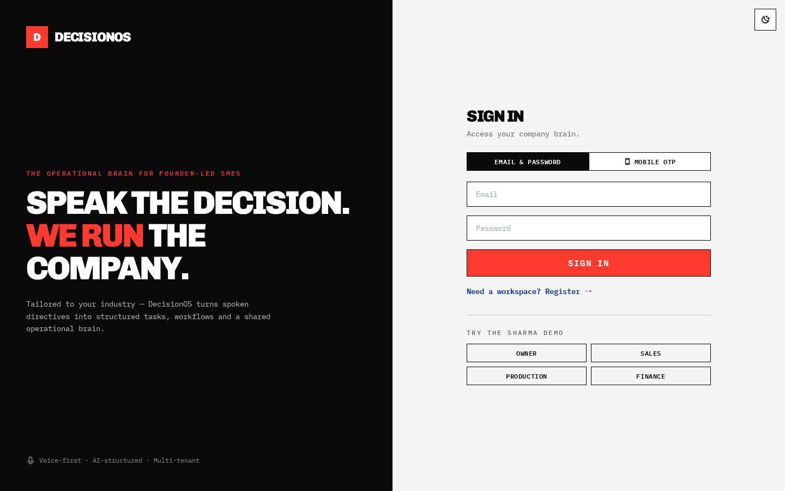
Option A — Email & Password
- Make sure the Email & Password tab is selected.
- Enter your email and password.
- Tap Sign In.
Option B — Mobile OTP (no password)
- Tap the Mobile OTP tab.
- Enter your registered mobile number and tap to send the code.
- Type the 6-digit code from the SMS and verify. You’re in.
3 · Roles & Access
What you can see and do depends on your role and the access your owner granted you. Every workspace has one or more Owners plus team members in departments (Sales, Finance, Production, etc. — named to fit your business).
| You are… | You can typically… |
|---|---|
| Owner | Capture & approve decisions, see the CEO Brief & all tasks, manage people & settings, review WhatsApp captures, approve leave. |
| Team Member | See My Work (your tasks), run the AI Execution Guide, upload proof, request leave, and use whatever modules the owner enabled for you (People, Capture, Company Brain, etc.). |
4 · Getting Around
On the web, the menu lives in the left sidebar. On mobile, use the bottom tab bar and the ☰ menu (see section 18). The bell icon (top-right) shows your notifications; your profile and sign-out are at the bottom-left.
| Menu | What it’s for |
|---|---|
| Decision Desk | Capture new decisions & see your incoming feed. |
| CEO Brief | Owner’s daily command centre (owner-focused). |
| My Work | Your tasks, execution guides, and leave. |
| People | Team members, customers & suppliers. |
| Company Brain | Ask questions & search all your records. |
| Capture | Upload documents / connect WhatsApp / review queue. |
| Meeting Notes | Turn a meeting into minutes & action items. |
| Settings | Company details & workspace rules (owner). |
5 · Decision Desk — Capturing a Decision
This is the heart of DecisionOS. Speak or type what you’ve decided, and the AI structures it into tasks for the right people.
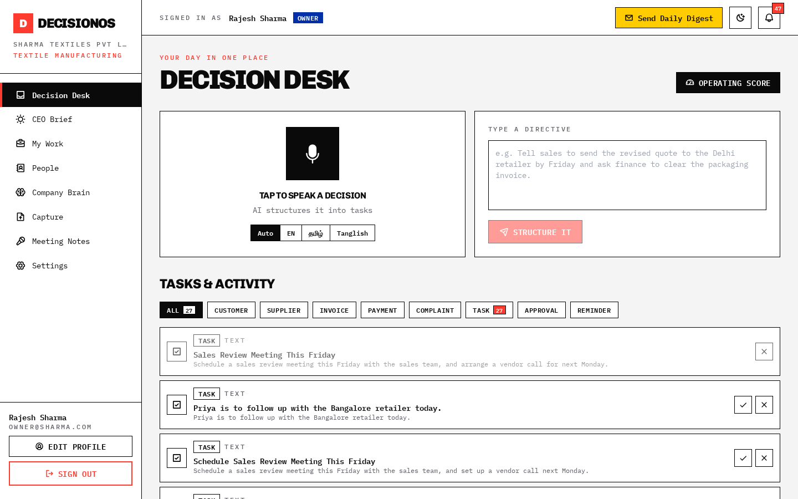
Speak a decision
- Pick a language chip: Auto, EN, தமிழ், or Tanglish (casual Tamil-English).
- Tap the microphone and speak naturally — e.g. “Tell Priya to follow up with the Bangalore retailer today.”
- Tap again to stop. The AI transcribes and structures it — you’ll see a short “structuring in process” note.
- When it’s ready, an Execution Summary shows what was created — tasks, people assigned, meetings, reminders.
Type a decision
- Type your instruction in the Type a Directive box.
- Tap Structure It.
- If the instruction is vague, DecisionOS may ask a couple of quick clarifying questions first — answer or skip.
6 · Approving Decisions & Assigning Work
Decisions captured from a directive start as Pending Approval — their tasks stay blocked until approved. This gives you a checkpoint before work goes live.
- On the Decision Desk, find the decision card marked Pending your approval.
- Review the auto-created tasks and who they’re assigned to.
- Need to add someone? Use Add team member / task to attach another task.
- Tap Approve to release the work (tasks unblock and appear in each person’s My Work), or Reject to cancel everything it created.
7 · My Work & Tasks
My Work is your personal to-do list. Tasks are grouped by type, and each card shows priority, due date, progress and the latest update.
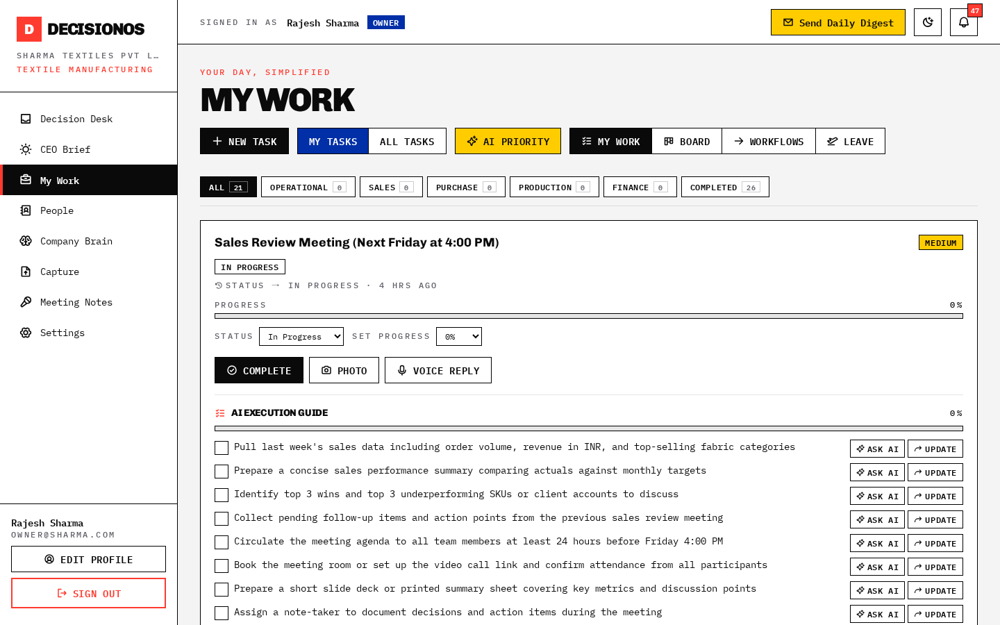
- Use the tabs to filter by category, or Completed to review finished work.
- Set a task’s Status and Progress from the dropdowns on the card.
- Tap Complete when done (you’ll be asked to confirm). Completed by mistake? Use Reopen.
- Turn on AI Priority to re-order tasks by impact, revenue, risk and urgency.
Hand off or escalate
Open a task’s Activity & Handoffs to log a note, hand off to a colleague, or escalate to the owner. The original task stays and a linked follow-up is created and notified.
8 · AI Execution Guide
Not sure how to do a task? Let the AI break it into a checklist and coach you through each step.
- On a task, tap Generate AI Plan. The AI drafts a step-by-step checklist tailored to the task.
- Edit if needed — add, remove or reorder steps — then Accept & start.
- Tick steps off as you go; the task’s progress bar updates automatically (and moves to Done at 100%).
- Stuck on a step? Tap Ask AI on that step for a suggestion, script, or how to handle an objection.
9 · Proof of Work (Photos & Voice)
Attach evidence to a task — a photo of completed work or a quick voice note.
- On an active task, tap Photo to snap/upload an image, or Voice Reply to record.
- The attachments appear on the task as a “Proof of work” block.
- Anyone viewing the task — the assignee and the owner (in All Tasks) — can click a photo to view it full-size and play the voice note inline.
10 · Leave & Absence
Request time off and get it approved — all inside My Work.
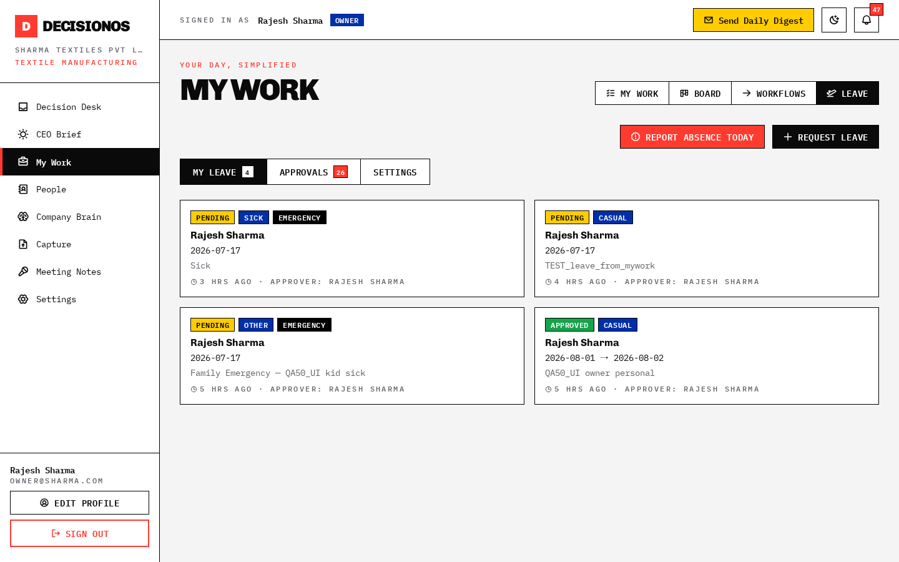
For Team Members
- Go to My Work and open the Leave view.
- Tap Request Leave, pick dates & reason, and submit. Your approver is notified.
- Out sick today? Use Emergency Absence to flag it immediately.
For Owners / Approvers
- Open the Approvals tab in Leave to see pending requests.
- Approve, Reject, or Request info. Approved leave shows on the calendar and in staffing counts.
- Owners can map who approves whom under the Leave Settings (or per-member Reporting Manager).
11 · CEO Brief
Your daily command centre. Owners see a company-wide brief with counters and a red “Fires to put out today” banner; team members see a personal version of their own work.
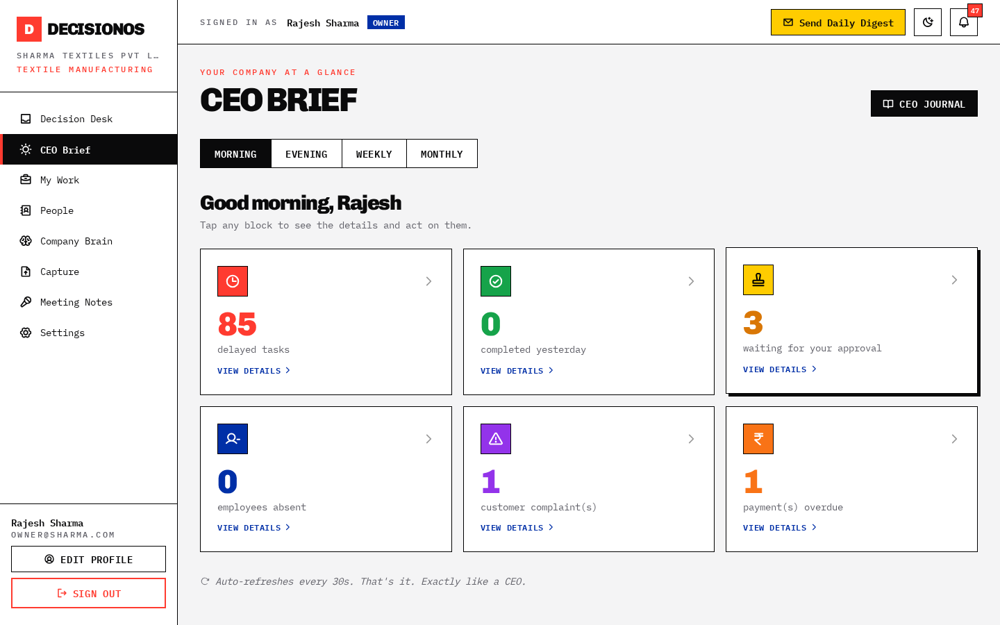
- Switch periods (Morning / Evening / Weekly / Monthly) to change the view.
- Click any counter to open its list and act right there — approve decisions, review purchases, resolve complaints.
- Use Send Daily Digest (top bar) to email yourself the summary.
12 · People — Team, Customers & Suppliers
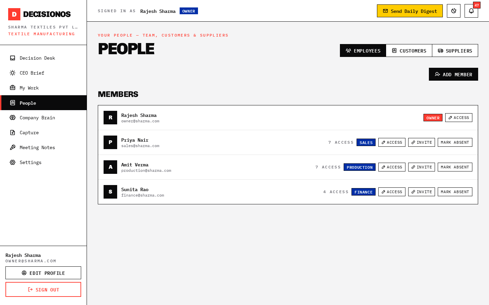
Add & manage team members (Owners)
- On the Employees tab, tap Add Member. Enter name, role, mobile/email.
- Choose Password Login or Mobile OTP (passwordless) sign-in.
- Tap Access on any member to grant/revoke modules (Inbox, People, Finance, Company Brain, Approve Decisions, Approve Leave, etc.).
- Use Invite to generate a one-tap link (share via WhatsApp).
Customers & Suppliers
Add contacts with company, phone, GST, tags and notes. Click any contact for a 360° profile — bills, payments, outstanding balance, follow-ups, complaints and relationship intelligence.
13 · Company Brain
Ask your business anything in plain English, or search your records directly.
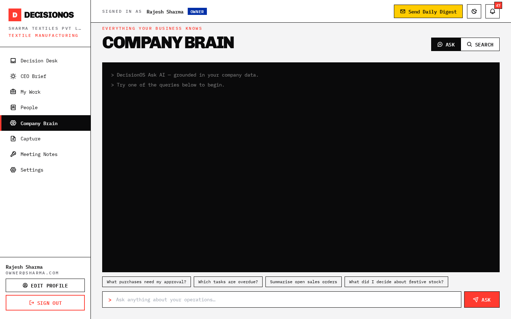
- On the Ask tab, type a question — e.g. “Who owes us the most?”, “What did we decide about the Delhi order?”
- Read the AI answer with links to the source records.
- Switch to Search to look up a specific customer, invoice or decision.
14 · Capture — Documents & WhatsApp
Get invoices, bills and instructions into DecisionOS — by uploading a file or forwarding on WhatsApp.
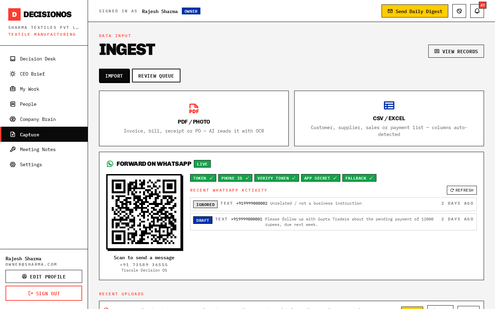
Upload a document
- Tap PDF / Photo (invoice, bill, receipt) or CSV / Excel (contact/sales lists).
- The AI reads it and shows an editable review panel — check the type, party and amounts.
- Tap View to open the original attachment, then File it to save the records.
WhatsApp Smart Capture
- Scan the QR (or save the number) and forward an invoice, photo or a quick instruction on WhatsApp.
- DecisionOS reads it and creates a Capture Draft — nothing auto-executes.
- It’s routed to the right department’s Review Queue (see section 15) for approval.
15 · Review Queue
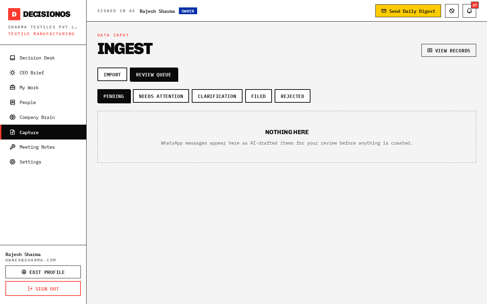
- Open Capture → Review Queue. Filter by Pending / Clarification / Approved / Rejected.
- Review each card’s AI classification, amount and any escalation warning.
- Approve (files/creates the work & assigns it), Edit, Reassign, Clarify (asks the sender back on WhatsApp), or Reject.
16 · Meeting Notes
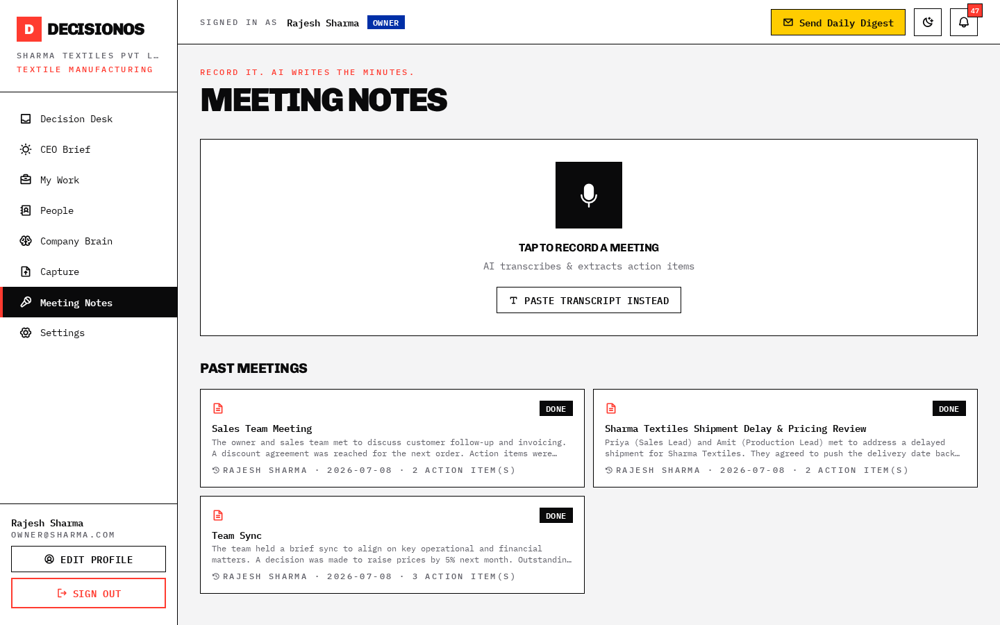
- Tap the mic to record the meeting, or paste a transcript.
- DecisionOS produces a title, summary, key points, decisions and action items.
- Action items are auto-created as tasks and assigned to the named people.
17 · Settings (Owner)
Configure your workspace — company profile and the rules that drive routing & approvals.
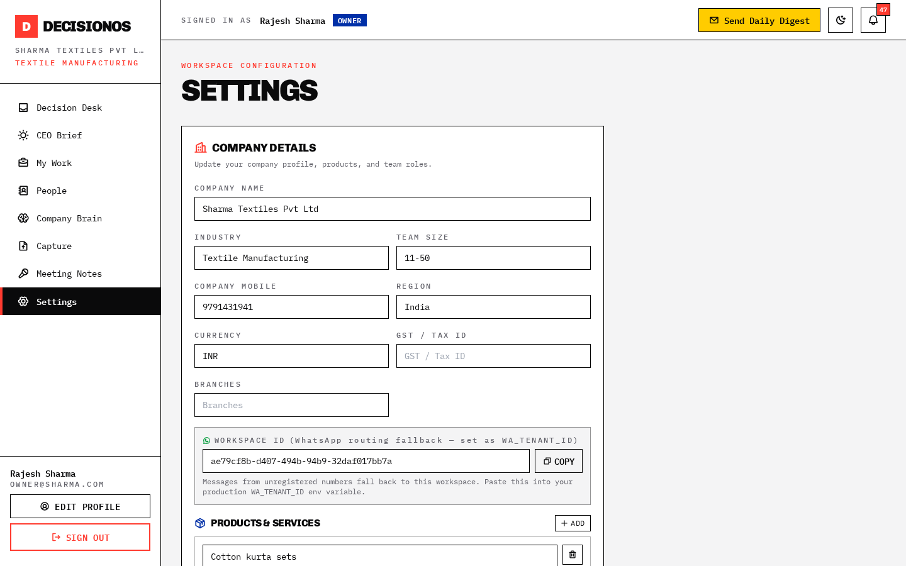
- Company Details: edit your profile, products/services, and add/rename/remove team roles.
- Currency & High-value threshold: set the amount above which payments/invoices are flagged “verify before approving”.
- Owner sign-off: turn on to route high-value items to the owner for approval; off lets finance handle them with a verify flag.
- Workspace ID: copy this for WhatsApp routing setup.
18 · Using the Mobile App
DecisionOS works right in your phone’s browser — no install needed. The layout adapts: a bottom tab bar for the main screens and a ☰ menu for everything else.
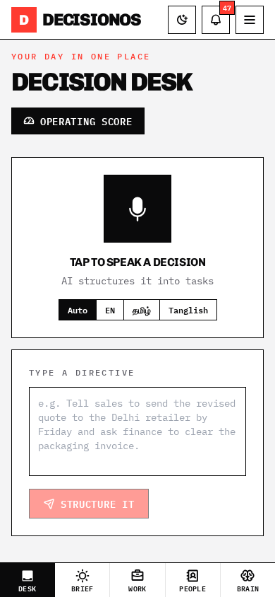
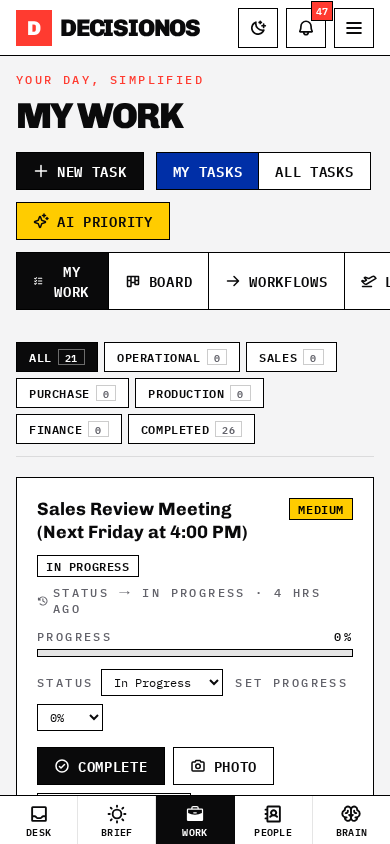
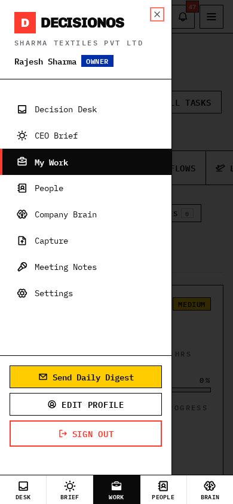
- Bottom tabs: Desk, Brief, Work, People, Brain.
- Swipe gestures: in the feed, swipe right to view, left to dismiss.
- Tap-to-read: long execution-guide steps open in a readable popup.
- Add to Home Screen: use your browser’s “Add to Home Screen” for an app-like icon.
19 · FAQ & Support
Common questions
| Question | Answer |
|---|---|
| I don’t see a menu I expect. | That module isn’t enabled for your access. Ask an owner to grant it in People → Employees → Access. |
| My voice note came out garbled. | Pick the right language chip (EN / தமிழ் / Tanglish) and speak close to the mic. You can re-record. |
| A task I completed by mistake. | Open the task and tap Reopen — it returns to your active work. |
| My WhatsApp capture went to the owner. | Only high-value or policy/approval items go to the owner. Everything else routes to the relevant department queue. |
| A new feature isn’t showing. | Do a hard refresh (Ctrl/Cmd + Shift + R). If it’s a fresh update, your admin may need to redeploy. |
Need help?
Contact your workspace Owner/Admin first for access and account questions. For product support, reach out to the DecisionOS support team via your account contact.